Esta guía explica cómo montar un servidor en casa que aloja tu web, tu nube privada y un bloqueador de anuncios para toda la red, sin abrir ningún puerto del router. Cada capítulo tiene los pasos, los comandos y cómo comprobar que funciona.
Nivel: 1.º de DAW, sin experiencia previa en servidores
Tiempo: un fin de semana largo
Coste: un dominio (unos 10 € al año)
Última revisión: 27 de noviembre de 2026
Resultado final
Un único equipo que ejecuta cuatro entornos separados y aislados entre sí. El diagrama muestra qué corre en cada uno y cómo llega el tráfico.
Cada recuadro es un entorno independiente. El destacado es la puerta de entrada web.
Qué necesitas
Elemento
En este proyecto
Mínimo recomendable
Equipo
Ryzen 5 2600, 40 GB RAM
4 núcleos y 16 GB de RAM
Disco del sistema
SSD de 128 GB
SSD de 64 GB
Discos de datos
2 HDD de 512 GB
2 discos del mismo tamaño
Red
Router con DHCP configurable
Poder cambiar el DNS del DHCP
Dominio
Gestionado en Cloudflare
Cualquier dominio
Telegram
Bot para avisos
Opcional
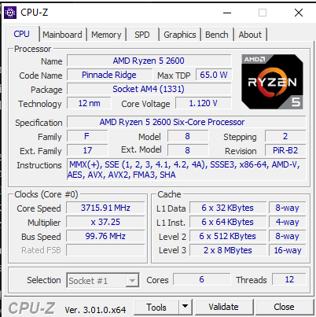
El procesador del servidor visto con CPU-Z: Ryzen 5 2600, 6 núcleos y 12 hilos.
Cómo leer esta guía
Sigue los capítulos en orden. Los comandos tienen botón Copiar. Donde veas tudominio.com pon tu dominio, y las IP 192.168.0.x son las de este montaje: cámbialas si tu red es otra.
Antes de empezar
Instalar Proxmox borra el disco del sistema. Haz copia de todo lo que quieras conservar del equipo anterior.
Capítulo 1
Instalar Proxmox VE
Proxmox es el sistema que se instala directamente en el equipo y permite crear máquinas virtuales y contenedores desde una web.
Tiempo: 30 minutos
Necesitas: pendrive de 8 GB, monitor y teclado
Descarga la ISO y crea el pendrive de arranque
Descarga la ISO de Proxmox VE desde proxmox.com y grábala con Balena Etcher o Rufus.
Arranca desde el pendrive
Entra en la BIOS (suele ser F2, F12 o Supr) y elige el pendrive. En el menú pulsa Install Proxmox VE (Graphical).
Elige el disco del sistema
En «Target harddisk» selecciona solo el SSD pequeño. Los dos discos de datos los configuramos después con ZFS, así que no los toques aquí.
Configura la red
Pon una IP fija fuera del rango que reparte el router, por ejemplo 192.168.0.254, con la puerta de enlace del router (normalmente 192.168.0.1). En el nombre del equipo (FQDN) usa algo como pve.tudominio.com.
Por qué pve
El primer trozo es el nombre del nodo. Es corto y no se puede cambiar fácilmente después, así que elígelo bien al instalar.
Entra en la web de administración
Cuando reinicie, desconecta monitor y teclado. Desde otro ordenador abre https://192.168.0.254:8006, acepta el aviso de certificado y entra con el usuario root y el dominio Linux PAM.
Comprueba el estado de los discos
Abre el terminal del nodo (Nodo → Consola) y revisa que los tres discos están sanos.
Durante la actualización aparecen avisos sobre el microcódigo de AMD: son informativos.
Aviso de suscripción
Sin licencia, Proxmox muestra un aviso al entrar y puede fallar apt update con los repositorios Enterprise. Desactiva esos repositorios en Nodo → Actualizaciones → Repositorios y añade el repositorio No-Subscription.
Comprueba que funciona
Ves la web en el puerto 8006, los tres discos aparecen como PASSED y el sistema está actualizado.
Capítulo 2
Discos de datos con ZFS en espejo
ZFS es un sistema de ficheros con redundancia incorporada. En modo espejo, cada dato se escribe en los dos discos a la vez: si uno se rompe, el servidor sigue funcionando.
Con dos discos de 512 GB tienes 512 GB útiles: la mitad se usa como copia.
Esto borra los discos
Crear el pool destruye lo que hubiera en ellos. Comprueba bien cuáles son con lsblk antes de continuar.
Identifica los discos por su ID estable
Los nombres /dev/sdb pueden cambiar entre reinicios. Los IDs no.
lsblk -o NAME,SIZE,MODEL,SERIAL
ls -l /dev/disk/by-id/ | grep -v part
Crea el pool en espejo
Cambia los dos IDs por los de tus discos.
zpool create -f -o ashift=12 datos mirror \
/dev/disk/by-id/ATA-DISCO_A \
/dev/disk/by-id/ATA-DISCO_B
zfs set compression=lz4 datos
zfs set atime=off datos
También puedes crearlo desde la web: Nodo → Discos → ZFS → Crear: ZFS, nombre datos, nivel RAID Mirror y marcas los dos discos.
Diálogo «Crear: ZFS» con los dos discos y el nivel de RAID en espejo.
Limita la memoria que usa ZFS
ZFS reserva mucha RAM como caché. Con 40 GB, lo dejamos en 6 GB para que las máquinas virtuales tengan memoria.
A la izquierda, el límite escrito en /etc/modprobe.d. A la derecha, la comprobación tras reiniciar: 6 GB.
Regístralo como almacenamiento en Proxmox
Datacenter → Almacenamiento → Añadir → ZFS, ID datos, y marca Disk image y Container.
pvesm status lista los almacenamientos: datos activo y, más adelante, backups.
Comprueba que funciona
zpool status datos
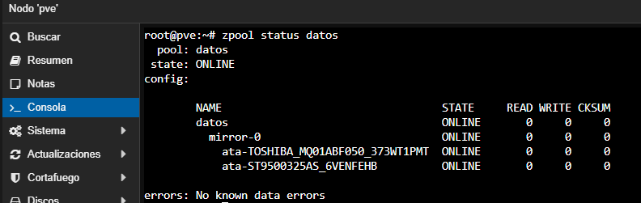
El pool datos en estado ONLINE con los dos discos del espejo sin errores.
Debe poner ONLINE para el pool y para los dos discos, sin errores.
Capítulo 3
Copias de seguridad y snapshots
El espejo protege de que se rompa un disco, pero no de borrar un archivo por error. Para eso hacemos snapshots frecuentes y copias nocturnas de las máquinas.
Espejo no es copia
Si borras un fichero, se borra en los dos discos a la vez. Las copias y los snapshots te dejan volver atrás.
Almacenamiento para las copias
Crea un dataset con cuota
La cuota evita que las copias se coman todo el pool.
La configuración de sanoid y el temporizador sanoid.timer activo, que lanza los snapshots solo.
Avisos de fallos
Proxmox envía alertas cuando falla una copia o un disco. Al principio van por correo; más adelante las pasaremos a Telegram en el capítulo de avisos.
Comprueba que funciona
zfs list -t snapshot | head
vzdump 100 --storage backups --mode snapshot
Aparecen snapshots con nombre autosnap_… y la copia manual termina sin errores.
Prueba a restaurar una copia
Una copia que nunca has restaurado no sabes si sirve. De vez en cuando, restaura la última copia de una máquina con otro ID, sin red y sin arranque automático, comprueba que funciona y bórrala.
qmrestore /datos/backups/dump/vzdump-qemu-103-FECHA.vma.zst 9103 --storage datos --unique 1
qm set 9103 --name prueba-restauracion-103 --onboot 0
# Sin red: así no choca con la máquina de verdad, que tiene la misma IP
qm set 9103 --net0 "$(qm config 9103 | grep ^net0 | cut -d' ' -f2),link_down=1"
qm start 9103
qm guest exec 9103 -- docker ps
qm stop 9103 && qm destroy 9103 --purge 1
En este servidor
La copia de la VM 103 (2 GB comprimida, 66 GB de discos) se restauró en 80 segundos. Arrancó, levantó sus contenedores y la web respondió dentro de la máquina.
Capítulo 4
DNS y acceso remoto: LXC 100
Un contenedor LXC es un mini sistema Linux que gasta muy poca memoria. Aquí instalamos AdGuard Home (bloqueo de anuncios para toda la casa) y Tailscale (VPN para entrar desde fuera sin abrir puertos).
Por qué aparte de Docker
Si Docker se detiene, la red de casa sigue teniendo DNS y la VPN sigue funcionando.
Descarga la plantilla de Debian
Almacenamiento local → Plantillas de CT → descarga debian-13-standard.
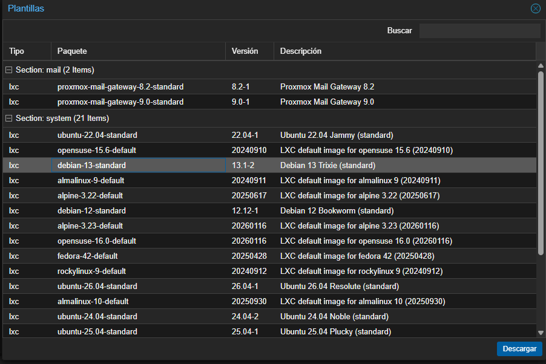
Se elige la plantilla de Debian 13 y se descarga.
Crea el contenedor
Crear CT con ID 100, nombre adguard, 1 núcleo, 512 MB de RAM, 8 GB de disco, IP fija 192.168.0.253/24 y puerta 192.168.0.1. Deja marcado «Contenedor sin privilegios» y activa el anidamiento.
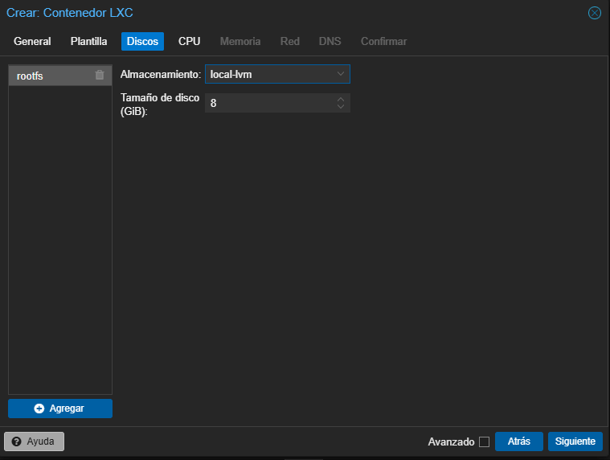
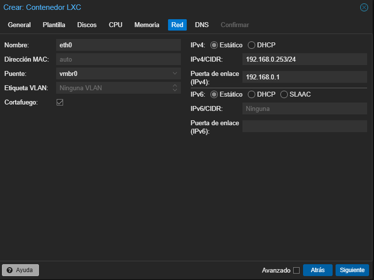
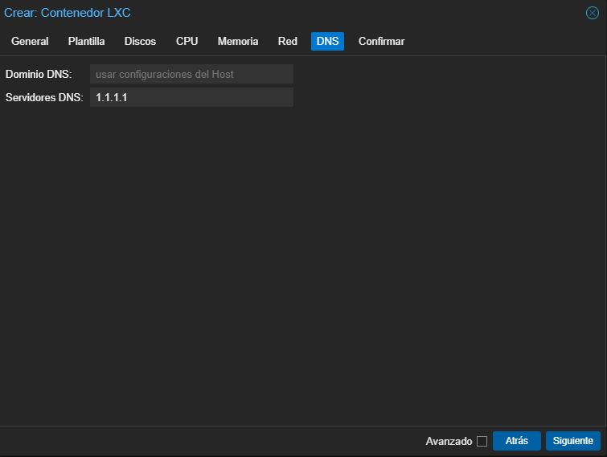
Pestañas del asistente: General, Plantilla, Disco (8 GB), CPU (1 núcleo), Memoria (512 MB), Red (IP fija) y DNS.
Después entra en http://192.168.0.253:3000 para el asistente inicial y crea tu usuario.
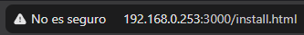
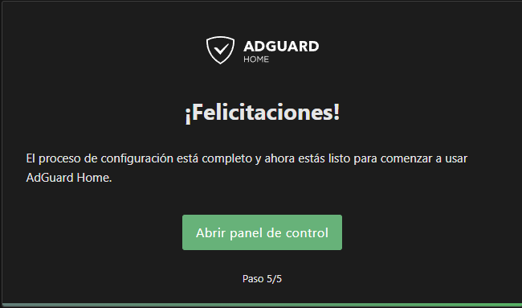
El asistente se abre en el puerto 3000: eliges las interfaces, creas el usuario y termina con «¡Felicidades!».
Después, en Ajustes → Configuración de DNS, usa servidores cifrados (DoH) como https://dns10.quad9.net/dns-query, y en Filtros → Listas de bloqueo activa las listas de anuncios, rastreadores y malware.
DNS ascendentes cifrados y listas de bloqueo activas.
Instala Tailscale como puente a tu red
Tailscale necesita el dispositivo /dev/net/tun. Apaga el contenedor y, en el nodo Proxmox, añade estas dos líneas:
El fichero /etc/pve/lxc/100.conf con las dos líneas añadidas.
Enciende el contenedor y, dentro de él:
curl -fsSL https://tailscale.com/install.sh | sh
echo 'net.ipv4.ip_forward = 1' >> /etc/sysctl.d/99-tailscale.conf
sysctl -p /etc/sysctl.d/99-tailscale.conf
tailscale up --advertise-routes=192.168.0.0/24
Abre el enlace que muestra, inicia sesión y, en el panel de Tailscale, aprueba la ruta anunciada.
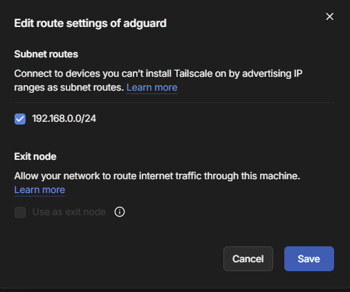
En el panel de Tailscale se aprueba la ruta de subred 192.168.0.0/24.
Para usar AdGuard también fuera de casa, en Tailscale → DNS → Add nameserver pon la IP de Tailscale del contenedor (tailscale ip -4).
AdGuard como servidor DNS de la tailnet.
Reparte el DNS por la red
En el router, en la configuración del DHCP, pon como DNS 192.168.0.253. Todos los dispositivos usarán AdGuard al renovar la conexión.
En el router (aquí un TP-Link), Servidor DHCP: el DNS primario apunta a 192.168.0.253.
Router de la operadora
Algunos routers no permiten cambiar el DNS del DHCP. Si es tu caso, pon el DNS a mano en cada dispositivo o usa un router propio.
Comprueba que funciona
nslookup google.com 192.168.0.253
Responde con una IP, y en el panel de AdGuard empiezan a aparecer consultas de tus dispositivos.
Capítulo 5
La puerta de entrada web: LXC 101
Un proxy inverso recibe todas las peticiones web y las reparte según el nombre: kuma.tudominio.com va a una máquina y tudominio.com a otra, con HTTPS en todas.
Crea el contenedor
ID 101, nombre npm, 1 GB de RAM, 8 GB de disco en el almacenamiento datos (el espejo ZFS), IP 192.168.0.252/24. En la pestaña Opciones → Características marca Nesting y keyctl: Docker las necesita dentro de un LXC.
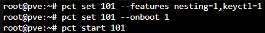
A la izquierda, el resumen del asistente. A la derecha, los comandos para activar nesting y arrancar el contenedor.
Abre http://192.168.0.252:81. Crea tu usuario administrador en el primer acceso, con una contraseña larga y única.
El panel de NPM recién instalado, sin proxy hosts todavía.
Versiones fijas
Fíjate en que la imagen lleva una versión concreta (2.16.0) y no latest. Así una actualización nunca llega sin que tú lo decidas.
Comprueba que funciona
El panel carga en el puerto 81 y docker ps muestra el contenedor npm en estado Up.
Capítulo 6
Dos máquinas virtuales: personal y profesional
Las aplicaciones van en máquinas virtuales Debian con Docker. Usamos dos para aislar lo personal (tu nube) de lo profesional (tu web pública y pruebas): si algo se compromete en una, la otra no se ve afectada.
VM
Nombre
IP
RAM
Disco sistema
Disco datos
102
personal
192.168.0.250
8 GB
20 GB (ZFS)
100 GB (ZFS)
103
profesional
192.168.0.251
8 GB
16 GB (ZFS)
50 GB (ZFS)
Crea la VM
Sube la ISO de Debian 13 netinst, y en Crear VM elige: máquina q35 con la BIOS por defecto (SeaBIOS), controlador VirtIO SCSI single, disco en datos (el espejo ZFS), 2 núcleos con tipo de CPU host, 8 GB de RAM y red VirtIO. En la pestaña Sistema marca Agente QEMU.
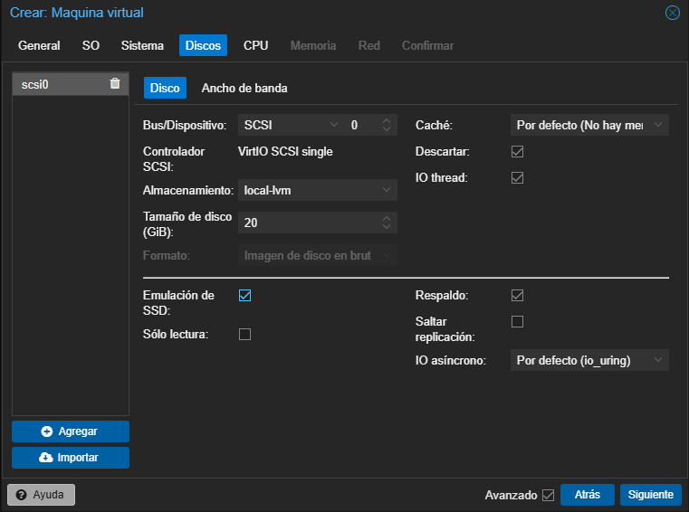
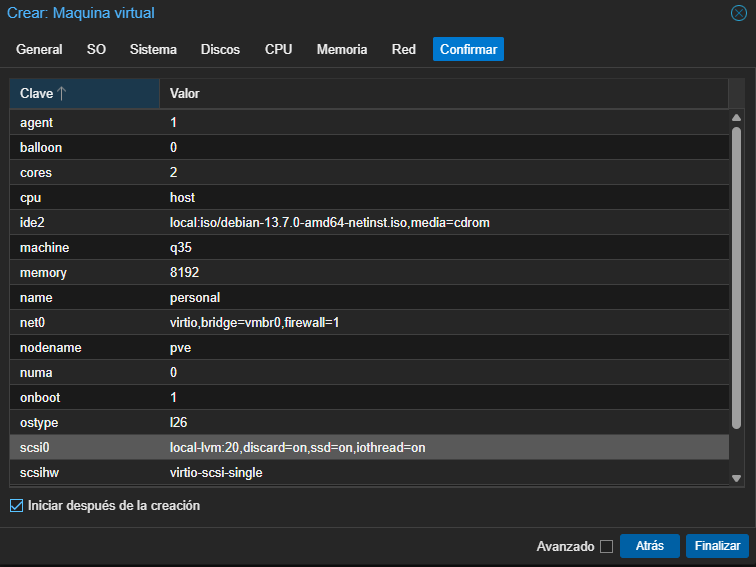
Asistente de la VM 102: General, Sistema (agente QEMU), Disco (20 GB), CPU (2 núcleos, tipo host), Memoria (8 GB) y confirmación.
Pon también el disco del sistema en el espejo
En las capturas el disco va a local-lvm, que está en el SSD único del sistema: si ese SSD falla, la VM solo se recupera desde la copia nocturna. Este servidor empezó así y después se movieron los discos en caliente, sin apagar nada: VM → Hardware → disco → Acción del disco → Mover almacenamiento → datos, con «Borrar origen» marcado. Desde la terminal: qm disk move 102 scsi0 datos --delete 1. Un LXC hay que pararlo antes: pct move-volume 101 rootfs datos --delete 1.
Instala Debian
Instalación mínima: sin escritorio, con servidor SSH y utilidades estándar. Crea un usuario normal, por ejemplo juanma, y no uses root para el día a día. Pon la IP fija desde el router (reserva DHCP) o en /etc/network/interfaces.
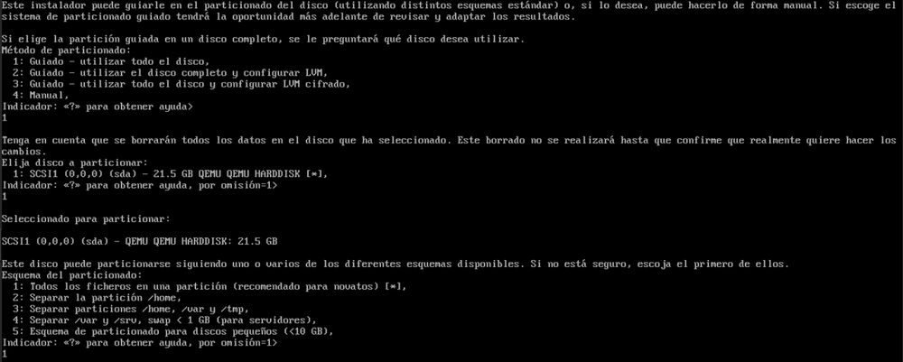
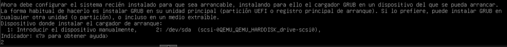
Instalador de Debian: nombre de la máquina, particionado guiado, selección de programas (servidor SSH y utilidades) e instalación de GRUB.
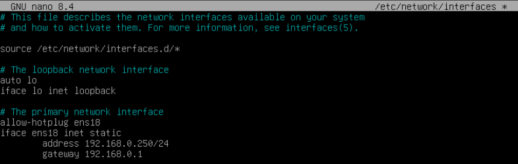
IP estática en /etc/network/interfaces y prueba de red con ping.
Cierra sesión y vuelve a entrar para que el grupo docker se aplique. El agente permite ejecutar comandos en la VM desde Proxmox con qm guest exec.
Limita el tamaño de los logs de Docker
Por defecto Docker guarda los logs de cada contenedor sin límite y, con meses de uso, pueden llenar el disco. Con esto cada contenedor guarda como mucho 3 ficheros de 10 MB:
Solo se aplica a los contenedores creados después. Si ya tenías alguno, recréalo con docker compose up -d --force-recreate. Haz lo mismo en el LXC 101.
Activa las actualizaciones de seguridad automáticas
En Debian solo instala, por defecto, los parches del repositorio de seguridad. El resto de actualizaciones las decides tú. Hazlo también en los dos LXC. En el nodo Proxmox no: allí conviene actualizar a mano.
Añade un disco de datos en ZFS
VM → Hardware → Añadir → Disco duro, almacenamiento datos, 100 GB. Dentro de la VM:
Se añade un disco nuevo desde el almacenamiento datos (el pool ZFS).
lsblk
sudo mkfs.ext4 /dev/sdb
sudo mkdir -p /srv/data
echo "UUID=$(sudo blkid -s UUID -o value /dev/sdb) /srv/data ext4 defaults 0 2" | sudo tee -a /etc/fstab
sudo mount -a
sudo chown -R $USER:$USER /srv/data
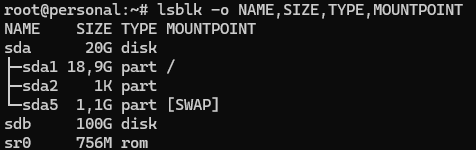
lsblk muestra el disco del sistema y el nuevo de 100 GB sin particionar.
Error típico
Si ejecutas los pasos como root en vez de con tu usuario, los ficheros quedan con otro dueño y los contenedores no pueden leerlos. Se arregla con sudo chown -R juanma:juanma /srv/data.
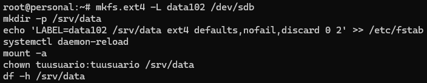
Error real: se copió el comando con tuusuario sin cambiarlo. Sustituye siempre los valores de ejemplo por los tuyos.
Repite para la VM 103 con su nombre, IP y disco de 50 GB.
Comprueba que funciona
docker run --rm hello-world
df -h /srv/data
Docker responde con el mensaje de bienvenida y /srv/data aparece montado con el tamaño del disco.
Capítulo 7
Desplegar las aplicaciones
Cada aplicación se describe en un archivo docker-compose.yml. Todo queda en /srv/data, que está en el pool ZFS, así que se copia y se protege con el resto.
cd /srv/data/stacks/utilidades && docker compose up -d
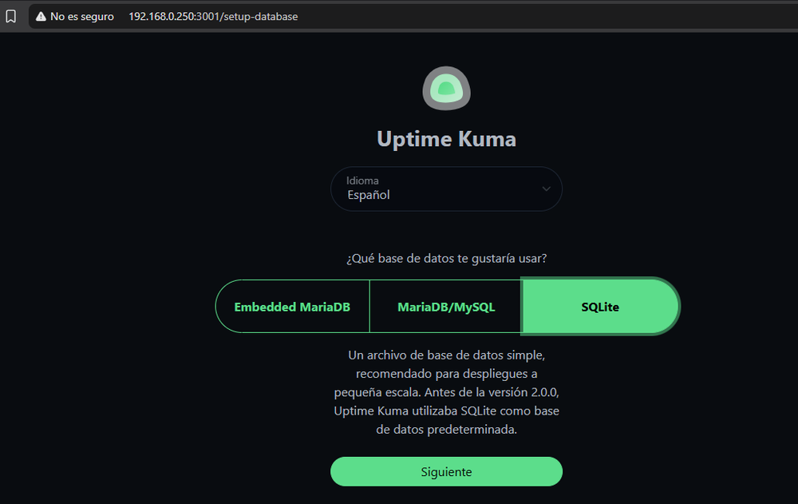
El compose de utilidades y el asistente inicial de Uptime Kuma (elige SQLite, la opción sencilla).
Error típico
Si Homepage responde Host validation failed, falta el nombre con el que accedes en HOMEPAGE_ALLOWED_HOSTS. Añádelo y recrea el contenedor.
VM 102: Nextcloud
Tu nube privada, con base de datos MariaDB y caché Redis. Las contraseñas no van en el compose, sino en un fichero .env en la misma carpeta, que Docker Compose lee solo.
cd /srv/data/stacks/nextcloud
# El .env solo lo podrá leer tu usuario
umask 077
P1=$(openssl rand -base64 24); P2=$(openssl rand -base64 24)
printf "MARIADB_ROOT_PASSWORD='%s'\nMARIADB_PASSWORD='%s'\nMYSQL_PASSWORD='%s'\n" "$P1" "$P2" "$P2" > .env
El compose de Nextcloud en la VM, con las contraseñas generadas en el .env.
Error típico: un $ dentro de la contraseña
Docker Compose trata $ como el inicio de una variable, tanto en el compose como en un .env sin comillas, y la contraseña que recibe el contenedor ya no es la que escribiste. Pon los valores del .env entre comillas simples, como arriba. Para ver lo que reciben de verdad los contenedores: docker compose config.
El archivo .env no se sube a ningún repositorio
Contiene contraseñas. Si algún día publicas tus compose en GitHub, sube solo un .env.example con valores falsos. Este proyecto lo hace así: .env está en el .gitignore.
Tareas de fondo de Nextcloud
Nextcloud tiene tareas periódicas: vaciar la papelera, limpiar versiones y ficheros temporales o enviar avisos. Por defecto solo se lanzan cuando alguien abre la web (modo «AJAX»), así que con poco uso pasan semanas sin ejecutarse. Pásalo a cron:
Tu usuario está en el grupo docker, así que no hace falta root. En Nextcloud → Ajustes de administración → Ajustes básicos debe aparecer «Cron» marcado, con la última ejecución hace menos de 5 minutos.
VM 102 y 103: Portainer
Portainer da una interfaz web para ver y gestionar los contenedores de cada VM. Como el resto, va en su propio compose, /srv/data/stacks/portainer/docker-compose.yml, para que su versión quede fija y escrita:
docker volume create portainer_data
cd /srv/data/stacks/portainer && docker compose up -d
Entra en https://IP-DE-LA-VM:9443 y crea el usuario administrador en los primeros minutos, porque pasado un rato Portainer bloquea el registro por seguridad.
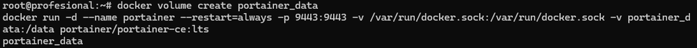
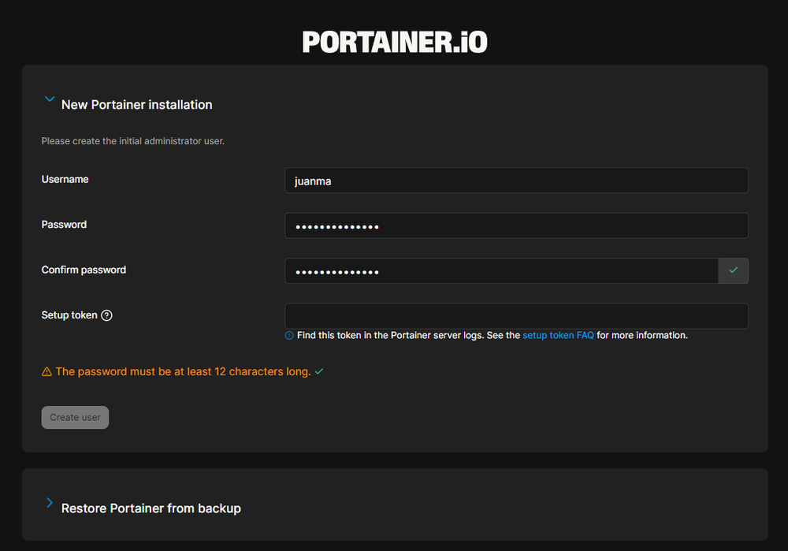
Arranque de Portainer en la VM 103 y primera pantalla para crear el administrador.
VM 103: portfolio
Una web estática servida con nginx. Los archivos de tu web están en /srv/data/portfolio.
Y su configuración, default.conf, en la misma carpeta:
# nginx del portfolio (VM 103). Sustituye a la configuración de serie de la imagen.
server {
listen 80;
listen [::]:80;
server_name localhost;
# nginx está detrás de NPM y Cloudflare y solo ve http.
# Con redirecciones absolutas, /servidor mandaba al visitante a http://.
# Con off, redirige a /servidor/ manteniendo https.
absolute_redirect off;
# No enseña la versión de nginx
server_tokens off;
# Cabeceras de seguridad.
# HSTS va sin includeSubDomains para no afectar a *.casa.
add_header Strict-Transport-Security "max-age=31536000" always;
add_header X-Content-Type-Options "nosniff" always;
add_header Referrer-Policy "strict-origin-when-cross-origin" always;
add_header X-Frame-Options "SAMEORIGIN" always;
location / {
root /usr/share/nginx/html;
index index.html index.htm;
}
# Página propia para las direcciones que no existen (con estado 404)
error_page 404 /404.html;
error_page 500 502 503 504 /50x.html;
location = /50x.html {
root /usr/share/nginx/html;
}
}
# www.tudominio.com redirige a tudominio.com (NPM pasa el nombre original)
server {
listen 80;
listen [::]:80;
server_name www.tudominio.com;
server_tokens off;
add_header Strict-Transport-Security "max-age=31536000" always;
return 301 https://tudominio.com$request_uri;
}
# Comprueba la configuración antes de aplicarla
docker run --rm -v "$PWD/default.conf:/etc/nginx/conf.d/default.conf:ro" nginx:1.31.8-alpine3.24 nginx -t
docker compose up -d
El compose del portfolio en la VM 103.
Error típico
Si la web carga pero las imágenes dan 404, es un problema de permisos de lectura: chmod -R a+rX /srv/data/portfolio.
VM 103: un proyecto con varias webs (Reserfy)
Reserfy fue mi proyecto final de 2.º SMR: dos webs WordPress (la de la empresa y la de un restaurante de ejemplo), una app en Flask para gestionar las reservas y sus bases de datos. Lo recuperé de una copia del servidor antiguo. Si tienes un proyecto parecido, estas son las ideas que sirven para cualquiera:
Una sola puerta por proyecto. Un nginx del propio stack reparte por dominio entre las webs y es el único contenedor que publica un puerto (aquí el 8082). Las bases de datos no publican ninguno.
Restaura desde el volcado, no desde los ficheros de MariaDB. Con el volcado montado en /docker-entrypoint-initdb.d, la imagen lo importa sola la primera vez. Si el volcado lleva todas las bases, quédate solo con la tuya: la base mysql del servidor antiguo no se importa.
Nada de contraseñas en el código. Todas van en el .env, y la app no arranca si falta alguna. La app entra en la base con un usuario que solo puede tocar las tablas que necesita, no como root.
Que la demo no mande correos. Un contenedor Mailpit los recibe todos y no los envía a ningún sitio. Si enviara de verdad, cualquiera podría usar el formulario para mandar correos a otras personas desde tu servidor. Para que se vea que funciona, al reservar se enseña en pantalla el correo de confirmación que llegaría, dentro de un iframe con sandbox.
Que se note que es una demo. El restaurante tiene como chef a un cocinero famoso y la dirección de un centro comercial real: es parte de la gracia del proyecto. Por eso una franja arriba de cada página avisa de que el restaurante es ficticio y de que no llega ningún correo.
Valida en el servidor, no solo en el navegador. La fecha mínima la ponía un JavaScript, y enviando el formulario directamente a su API se aceptaban fechas pasadas y reservas repetidas. Las comprobaciones (teléfono, fechas, día de cierre, duplicados) van ahora en un plugin propio.
Un formulario público necesita frenos. Un campo trampa oculto para los bots y un máximo de reservas por hora desde cada IP. Lo que se para queda como spam y no llega a la aplicación de gestión. Ojo con la IP: detrás de Cloudflare y de dos proxys, la real viene en la cabecera CF-Connecting-IP.
Guarda los datos lo justo. Una tarea diaria borra las reservas de prueba con más de 7 días, y Mailpit hace lo mismo con los correos (MP_MAX_AGE: 7d). Las reservas de ejemplo del panel llevan una marca para quedarse.
Cierra lo que no usas.xmlrpc.php responde 403, la API no lista los usuarios y, tras 5 contraseñas fallidas, esa IP espera 15 minutos. Son lo primero que prueban los ataques automáticos a WordPress.
Todo eso son must-use plugins: ficheros PHP en wp-content/mu-plugins que WordPress carga siempre y que no se pueden desactivar desde el panel. Viven en el repositorio y se montan en solo lectura:
# Cambia el dominio antiguo por el nuevo en toda la base (respeta los datos serializados)
docker compose run --rm cli-reserfy wp search-replace antiguo.duckdns.org reserfy.tudominio.com \
--all-tables-with-prefix --skip-columns=guid
# Quita los plugins que una demo no necesita (copias, Jetpack, cachés...)
docker compose run --rm cli-reserfy wp plugin uninstall jetpack updraftplus --deactivate
Para publicarlo: una regla en el firewall de la VM que deje llegar al 8082 solo desde NPM, un proxy host por dominio en NPM hacia 192.168.0.251:8082 y una ruta por dominio en el túnel hacia NPM, como en el capítulo 8. El panel de gestión no va al túnel: tiene su nombre en *.casa y la lista de acceso de la red de casa.
# nginx de entrada del stack: el esquema real del visitante
map $http_cf_visitor $esquema_cloudflare {
"~\"scheme\":\"https\"" https;
default "";
}
map $esquema_cloudflare $esquema_visitante {
https https;
default $http_x_forwarded_proto;
}
# ...y en cada location:
proxy_set_header X-Forwarded-Proto $esquema_visitante;
Error real
WordPress detrás de Cloudflare Tunnel y NPM se queda en un bucle de redirecciones a https. El túnel entrega a NPM por http, NPM pone X-Forwarded-Proto: http y WordPress, configurado en https, vuelve a redirigir. Se comprueba con curl -H "Host: …": da 301 a la misma dirección. La solución es leer el esquema de la cabecera CF-Visitor, que Cloudflare añade y NPM no toca.
Comprueba que funciona
Cada servicio responde en su puerto desde tu ordenador: Kuma en :3001, Homepage en :3000, Nextcloud en :8080 y Portainer en :9443. El portfolio, en :8081, solo debe verse desde el proxy: el firewall del capítulo de seguridad lo bloqueará para el resto.
Capítulo 8
Publicar tu web sin abrir puertos
Normalmente para publicar una web abres los puertos 80 y 443 del router y expones tu IP de casa. Con Cloudflare Tunnel es tu servidor el que se conecta hacia fuera, así que no hay puertos abiertos ni IP pública expuesta. Funciona incluso si tu operadora usa CGNAT.
Pasa tu dominio a Cloudflare
Crea una cuenta gratuita, añade tu dominio y cambia los servidores de nombres (nameservers) en el registrador por los que te indique Cloudflare. Tarda desde unos minutos hasta unas horas.
Crea el túnel
En Cloudflare: Zero Trust → Networks → Tunnels → Crear túnel → Cloudflared. Ponle de nombre casa y copia el token que muestra.
Arranca cloudflared
En el LXC 101, crea /opt/cloudflared/docker-compose.yml y un .env con el token:
cd /opt/cloudflared
echo 'TUNNEL_TOKEN=PEGA_AQUI_TU_TOKEN' > .env
chmod 600 .env
docker compose up -d
Enlaza el nombre con NPM
En el túnel, pestaña Public Hostname → añade tudominio.com con servicio HTTP a 192.168.0.252:80. Repite con www.
«Agregar aplicación publicada»: el dominio apunta a http://192.168.0.252:80, el NPM.
Crea el proxy host en NPM
En NPM → Hosts → Proxy Hosts → Añadir: dominio tudominio.com, esquema http, IP 192.168.0.251 y puerto 8081.
NPM → Proxy Hosts: una entrada por dominio, con destino http 192.168.0.251:8081.
Token del túnel
El token da acceso al túnel. No lo publiques ni lo pegues en capturas. Si se filtra, regenéralo desde el panel de Cloudflare.
Comprueba que funciona
Abre https://tudominio.com desde los datos del móvil (sin wifi). Debe cargar tu web con candado.
Capítulo 9
Nombres con HTTPS para tus servicios internos
En lugar de recordar 192.168.0.250:3001, accederás a https://kuma.casa.tudominio.com con certificado válido, pero solo desde tu red o por VPN.
Crea un token de Cloudflare para el certificado
Cloudflare → Mi perfil → Tokens de API → Crear token con la plantilla Edit zone DNS, limitado a tu zona. Cópialo.
Pide un certificado comodín en NPM
NPM → SSL Certificates → Add → Let's Encrypt via DNS. Dominios: *.casa.tudominio.com y casa.tudominio.com. Proveedor: Cloudflare, y pega el token. Acepta los términos.
Por qué comodín
Un solo certificado vale para todos los nombres algo.casa.tudominio.com. Cada servicio nuevo no necesita certificado propio.
Haz que el nombre apunte a NPM dentro de casa
En AdGuard Home → Filtros → Reescrituras de DNS → Añadir: *.casa.tudominio.com → 192.168.0.252.
Así, dentro de tu red, esos nombres van directamente al proxy. Fuera de casa no resuelven a nada útil.
Crea una lista de acceso solo LAN
NPM → Access Lists → Añadir: nombre solo-lan, y en Rules permite 192.168.0.0/24. Si usas Tailscale, añade también 100.64.0.0/10.
Crea un proxy host por servicio
Nombre
Destino
Notas
kuma.casa…
http 192.168.0.250:3001
Websockets
home.casa…
http 192.168.0.250:3000
nextcloud.casa…
http 192.168.0.250:8080
Ver abajo
portainer1.casa…
https 192.168.0.250:9443
Destino HTTPS
portainer2.casa…
https 192.168.0.251:9443
Destino HTTPS
adguard.casa…
http 192.168.0.253:80
proxmox.casa…
https 192.168.0.254:8006
Websockets
En todos: pestaña SSL con el certificado comodín, Force SSL y HTTP/2; y la lista de acceso solo-lan.
Ajusta Nextcloud para que acepte el nuevo nombre
Nextcloud rechaza nombres que no conoce. Desde la VM 102:
En el proxy host de Nextcloud, pestaña Advanced, añade client_max_body_size 10G; para poder subir archivos grandes.
Error típico
Si el nombre no abre, vacía la caché DNS del ordenador con ipconfig /flushdns y comprueba con nslookup kuma.casa.tudominio.com que responde 192.168.0.252.
Comprueba que funciona
Todos los nombres abren con candado en casa. Desde el móvil con datos, sin VPN, dan error: es lo que queremos.
Capítulo 10
Seguridad: firewall y accesos
Ya funciona todo. Ahora lo protegemos para que, si algo se compromete, el daño quede contenido.
Principios aplicados
Medida
Qué evita
Sin puertos abiertos en el router
Escaneos y ataques directos desde Internet
Cloudflare delante de la web
Oculta tu IP y filtra tráfico malicioso
Paneles internos solo por LAN o VPN
Acceso a Proxmox o Portainer desde fuera
VM profesional aislada de la personal
Que un fallo en una web de pruebas llegue a tus datos
Usuario propio con 2FA en Proxmox
Entrar con la cuenta root si se filtra una contraseña
Crea tu usuario en Proxmox con 2FA
Datacenter → Permisos → Usuarios → Añadir, reino Proxmox VE authentication server. Dale el rol Administrator en la ruta /. Después, Datacenter → Permisos → Two Factor → Añadir un TOTP y escanea el QR con una app de autenticación.
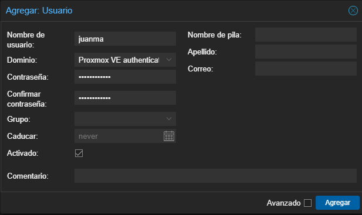
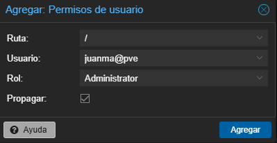
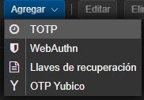
Crear el usuario, darle el rol Administrator en / y añadir un segundo factor TOTP.
Guarda los códigos de recuperación
Si pierdes el móvil y no tienes los códigos, tendrás que entrar con root@pam desde el terminal para recuperarte. Déjalo como acceso de emergencia.
Activa el firewall del datacenter
Datacenter → Cortafuegos → Opciones → Cortafuegos: Sí. Al activarlo, Proxmox deja entrar a la web (8006) y al SSH (22) desde los equipos del conjunto management. Si no lo defines, ese conjunto es toda tu red local.
Cierra el nodo al resto de la red
Por defecto, todo lo que no tiene regla entra: cualquier móvil, tele o máquina virtual de casa llega a la web de Proxmox, a su SSH y a servicios que no usas, como rpcbind (111). Deja la política de entrada en DROP y da acceso solo a quien lo necesita. En /etc/pve/firewall/cluster.fw:
[OPTIONS]
enable: 1
policy_in: DROP
[ALIASES]
local_network 192.168.0.254 # solo el propio nodo
[IPSET management] # pueden administrar: web, SSH y consolas
192.168.0.135 # tu PC (fija su IP en el router)
192.168.0.253 # Tailscale: lo que llega por la VPN sale con esta IP
Y en /etc/pve/nodes/pve/host.fw, las excepciones de servicios que consultan la web del nodo:
[RULES]
IN Ping(ACCEPT) -source 192.168.0.0/24 # ping desde casa
IN ACCEPT -source 192.168.0.250 -p tcp -dport 8006 # Uptime Kuma y Homepage
IN ACCEPT -source 192.168.0.252 -p tcp -dport 8006 # NPM: proxmox.casa...
Apaga también rpcbind si no usas almacenamiento NFS: systemctl disable --now rpcbind.service rpcbind.socket.
Trampa: el alias local_network
Aunque definas tu propio management, Proxmox le añade siempre el alias automático local_network, que es toda la red de casa: el SSH seguía abierto para las VMs. Se ve con ipset list PVEFW-0-management-v4. Redefinir el alias con la IP del nodo lo arregla.
Con red de seguridad
Antes de tocar reglas que pueden dejarte fuera, programa la vuelta atrás: systemd-run --on-active=300 cp /root/cluster.fw.antes /etc/pve/firewall/cluster.fw. Si todo va bien, la cancelas con systemctl stop del temporizador. Si te quedas fuera, en 5 minutos vuelve la configuración anterior.
Reglas de la VM profesional (103)
VM 103 → Cortafuegos. El objetivo es que solo NPM pueda llegar a la web y que la VM no pueda tocar al resto.
IN ACCEPT 8081/tcp origen 192.168.0.252 (NPM → portfolio)
IN ACCEPT 22/tcp origen 192.168.0.0/24 (SSH desde la LAN)
IN ACCEPT 9443/tcp origen 192.168.0.0/24 (Portainer desde la LAN)
OUT DROP destino 192.168.0.250 (no llega a la VM personal)
OUT ACCEPT destino 192.168.0.253 puerto 53 (consultas DNS a AdGuard)
OUT DROP destino 192.168.0.0/24 (resto de la red local)
El orden importa
Las reglas se evalúan de arriba abajo y gana la primera que coincide. Pon las excepciones (ACCEPT) antes del bloqueo general (DROP).
Error real: la VM se quedó sin DNS
En este servidor el OUT DROP de la red local acabó encima del ACCEPT del DNS. La web seguía funcionando, porque recibe tráfico y no necesita resolver nombres, pero la VM no podía resolver ninguno: apt update se quedaba colgado y no llegaban las actualizaciones. Se detecta con getent hosts deb.debian.org dentro de la VM. En la interfaz, arrastra la regla de DNS encima del DROP.
SSH solo con clave, sin contraseñas
Con contraseña, cualquiera en tu red puede intentar adivinarla. Con clave, hace falta el fichero que solo está en tu ordenador. Primero crea tu clave y cópiala a cada equipo, y comprueba que entras con ella antes de desactivar las contraseñas. En Windows, desde PowerShell:
La consola web de Proxmox sigue funcionando con contraseña: es tu acceso de emergencia si pierdes la clave.
Error real: SSH caído en un LXC
En los contenedores LXC de Debian estaban activos a la vez ssh.socket y ssh.service, y competían por el puerto 22. Al recargar, el servicio falló con Cannot bind any address y el LXC se quedó sin SSH. Se arregla desde Proxmox, que no depende de SSH: pct exec 101 -- bash -c "systemctl disable --now ssh.socket; systemctl enable --now ssh.service".
Comprueba que funciona
# Desde tu PC: debe FALLAR (solo NPM puede llegar)
curl -m 5 http://192.168.0.251:8081
# Desde la VM 103: debe FALLAR (no alcanza la VM personal)
curl -m 5 http://192.168.0.250:8080
# Desde la VM 103: debe FUNCIONAR (el DNS sí está permitido)
getent hosts deb.debian.org
# Desde la VM 102: la web del nodo responde, pero el SSH debe FALLAR
curl -sk -o /dev/null -w "%{http_code}\n" https://192.168.0.254:8006
timeout 4 bash -c "</dev/tcp/192.168.0.254/22" || echo bloqueado
# Desde tu PC, forzando contraseña: debe responder "Permission denied (publickey)"
ssh -o PubkeyAuthentication=no root@192.168.0.254
# La web pública sigue funcionando
curl -I https://tudominio.com
Capítulo 11
Monitorización y avisos por Telegram
Un servidor que se cae sin que te enteres no sirve. Uptime Kuma vigila tus servicios y Proxmox avisa de fallos de copias y discos, todo al mismo chat de Telegram.
1. Crea el bot
Habla con @BotFather en Telegram
Envía /newbot, elige un nombre y recibirás un token. Escribe un mensaje cualquiera a tu bot, y consulta tu chat ID con un bot como @userinfobot.
El token es una contraseña
Quien lo tenga puede enviar mensajes como tu bot. No lo pegues en chats, capturas ni repositorios. Si se filtra, en @BotFather usa /revoke y genera uno nuevo.
2. Uptime Kuma
Añade la notificación de Telegram
Ajustes → Notificaciones → Configurar → tipo Telegram, pega el token y el chat ID y activa Predeterminada para que se aplique a todos los monitores nuevos.
Añade monitores
Añadir nuevo monitor → tipo HTTP(s) con la URL de cada servicio. Estos son los de este proyecto:
Monitor
Qué comprueba
Internet
Ping a un DNS público (1.1.1.1)
Router
Ping a 192.168.0.1
AdGuard (DNS y web)
Resuelve nombres y abre el panel
Proxmox, NPM, Portainer ×2
El panel responde
Nextcloud, Homepage
La web responde
Portfolio
La web pública responde (desde fuera de la LAN)
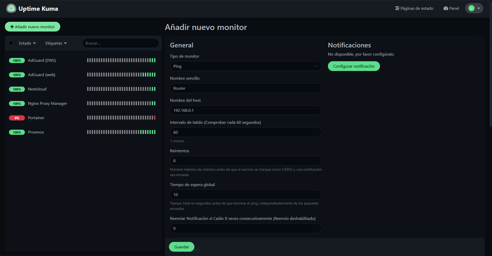
Lista de monitores de Uptime Kuma.
3. Avisos de Proxmox
Proxmox no trae Telegram, pero permite un destino Webhook.
Nombre: telegram
Método: POST
URL: https://api.telegram.org/bot{{ secrets.token }}/sendMessage
Cabecera: Content-Type: application/json
Cuerpo: {"chat_id":"TU_CHAT_ID","text":"{{ title }}\n\n{{ message }}"}
Secreto: nombre = token valor = (tu token)
Error típico
Si sale invalid handlebars syntax, has puesto el token dentro de las llaves de la URL. La URL debe llevar literalmente {{ secrets.token }}; el token real va solo en el campo Secreto.
Pruébalo y enrútalo
Pulsa Probar: debe llegarte un mensaje. Después, en Matchers, edita default-matcher y marca el destino telegram.
Error real: el destino creado pero sin usar
En este servidor el webhook existía y la prueba funcionaba, pero default-matcher seguía enviando solo al correo de root. Los correos rebotaban, así que un fallo de disco o de copia no habría avisado a nadie. Comprueba la regla con grep -A4 "matcher:" /etc/pve/notifications.cfg: debe aparecer target telegram.
Error real: Gmail rechaza el correo del servidor
Con mail-to-root y telegram a la vez, cada noche llegaba a Telegram un «Undelivered Mail Returned to Sender». El servidor mandaba el aviso directamente a Gmail desde la IP de casa, sin SPF ni DKIM, y Gmail lo rechazaba (550 5.7.26). El rebote iba a root, y el correo de root se reenvía a Telegram. Si no necesitas correo, quita mail-to-root de default-matcher. Si lo necesitas, usa un destino SMTP con una contraseña de aplicación de Google en lugar de enviar directamente.
El comparador default-matcher, que decide a qué destino van los avisos.
Comprueba que funciona
Para el contenedor de Nextcloud durante un minuto: Kuma te avisa por Telegram. Vuelve a encenderlo y recibes el aviso de recuperación.
Capítulo 12
Copias de configuración y actualizaciones
Las copias de las máquinas ya cubren los discos, pero la configuración del propio Proxmox y los volcados de bases de datos conviene guardarlos aparte y en un formato que se pueda leer.
Script de copia en la VM 102
Guarda un volcado de la base de datos de Nextcloud y los ficheros de configuración. Créalo en /usr/local/bin/dbdump.sh:
#!/bin/bash
# Volcado de la base de datos de Nextcloud y copia de los compose (VM 102).
# Lo lanza backup-config.sh desde el nodo Proxmox cada noche.
umask 077
DESTINO=/srv/data/dumps
DIAS_GUARDADOS=7
hoy=$(date +%F)
mkdir -p "$DESTINO" && chmod 700 "$DESTINO"
# La contraseña se lee dentro del contenedor, así no aparece aquí
docker exec nextcloud-db sh -c 'mariadb-dump -uroot -p"${MYSQL_ROOT_PASSWORD:-$MARIADB_ROOT_PASSWORD}" --all-databases --single-transaction' \
| gzip > "$DESTINO/nextcloud-$hoy.sql.gz"
tar czf "$DESTINO/stacks-$hoy.tar.gz" /srv/data/stacks /srv/data/utilidades/homepage 2>/dev/null
# Borra los volcados de más de una semana
find "$DESTINO" -mtime +$DIAS_GUARDADOS -type f -delete
Script de copia en el nodo Proxmox
Guarda /etc/pve (configuración de todas las máquinas), la red y sanoid, y llama al script anterior. Créalo en /usr/local/bin/backup-config.sh:
#!/bin/bash
# Copia diaria de la configuración de Proxmox y volcado de la BD de Nextcloud.
# Se ejecuta a las 02:45, antes de vzdump (03:00), para que la copia
# nocturna de la VM 102 ya lleve dentro el volcado del día.
# Registro en /var/log/backup-config.log. Los errores también van al journal.
set -u
PATH=/usr/local/sbin:/usr/local/bin:/usr/sbin:/usr/bin:/sbin:/bin
umask 077
DESTINO=/datos/backups/config
REGISTRO=/var/log/backup-config.log
DIAS_GUARDADOS=14
FALLO=0
# Escribe una línea con la fecha en el registro
apuntar() {
echo "$(date '+%F %T') $*" >> "$REGISTRO"
}
# Apunta el error, lo manda al journal y marca que algo ha fallado
avisarError() {
apuntar "ERROR $*"
logger -t backup-config -p user.err "$*"
FALLO=1
}
mkdir -p "$DESTINO"
chmod 700 "$DESTINO"
# 1. Configuración de Proxmox
copia="$DESTINO/pve-config-$(date +%F).tar.gz"
tar czf "$copia" /etc/pve /etc/network/interfaces /etc/hosts /etc/hostname /etc/sanoid \
/etc/postfix /etc/cron.d /usr/local/bin 2>/dev/null
resultado=$?
# tar devuelve 1 si algún archivo cambió mientras copiaba; eso no es un fallo
if [ $resultado -le 1 ] && [ -s "$copia" ]; then
apuntar "OK configuracion ($(du -h "$copia" | cut -f1))"
else
avisarError "copia de configuracion (tar rc=$resultado)"
fi
# 2. Volcado de la BD de Nextcloud dentro de la VM 102, con el agente QEMU
salida=$(qm guest exec 102 --timeout 600 -- bash /usr/local/bin/dbdump.sh 2>&1)
if echo "$salida" | grep -q '"exitcode" : 0'; then
apuntar "OK volcado BD Nextcloud"
else
avisarError "volcado BD Nextcloud: $(echo "$salida" | tr -d '\n' | cut -c1-300)"
fi
# 3. Borra las copias de configuración más antiguas
find "$DESTINO" -name 'pve-config-*.tar.gz' -mtime +$DIAS_GUARDADOS -delete
chmod 600 "$DESTINO"/* 2>/dev/null
exit $FALLO
chmod 700 /usr/local/bin/backup-config.sh
printf '%s\n' 'PATH=/usr/local/sbin:/usr/local/bin:/usr/sbin:/usr/bin:/sbin:/bin' \
'45 2 * * * root /usr/local/bin/backup-config.sh' > /etc/cron.d/backup-config
# Prueba en un entorno tan pobre como el de cron, no desde tu terminal
env -i PATH=/usr/bin:/bin /usr/local/bin/backup-config.sh
cat /var/log/backup-config.log
Se ejecuta a las 02:45, antes de la copia de vzdump de las 03:00, para que la copia de la VM 102 ya lleve el volcado del día.
Error real: el volcado no se hizo nunca
La primera versión de este script terminaba con >/dev/null 2>&1 y el cron no definía PATH. Al probarlo a mano funcionaba, porque tu terminal sí encuentra qm. Desde cron fallaba cada noche sin dejar rastro: durante semanas no hubo ni un volcado. Moraleja: no tires los errores a /dev/null; guárdalos en un registro y pruébalo como lo ejecutará cron.
Misma ubicación, mismo riesgo
Estas copias están en el mismo pool. Si fallan los dos discos a la vez, se pierden también. Por eso hay una copia más en un pendrive, que se explica justo debajo.
Copia en un pendrive cifrado
Un pendrive de 64 GB enchufado al nodo guarda cada noche la última copia de cada máquina y la de la configuración. Así, si fallan los dos discos del espejo, las máquinas se pueden restaurar desde el pendrive. Va cifrado con LUKS: si alguien se lo lleva, no puede leer nada.
Cifra el pendrive
Esto borra todo lo que tenga. Busca su nombre en /dev/disk/by-id/ para no equivocarte de disco.
apt install -y cryptsetup-bin
USB=/dev/disk/by-id/usb-NOMBRE-DEL-PENDRIVE
echo 'label: gpt
type=linux' | sfdisk $USB
# Clave en un fichero que solo lee root: así la copia abre el pendrive sola
dd if=/dev/urandom of=/root/.copia-usb.key bs=4096 count=1
chmod 0400 /root/.copia-usb.key
cryptsetup luksFormat --type luks2 --key-file /root/.copia-usb.key --label copia-usb ${USB}-part1
cryptsetup open --key-file /root/.copia-usb.key ${USB}-part1 copia-usb
mkfs.ext4 -L copia-usb -m 0 /dev/mapper/copia-usb
cryptsetup close copia-usb
Añade una contraseña tuya
Si el servidor muere, el fichero de clave muere con él. Con una segunda clave puedes abrir el pendrive en cualquier Linux. Guárdala en tu gestor de contraseñas.
El script /usr/local/bin/copia-usb.sh abre el pendrive, copia, comprueba cada fichero con sha256sum, borra las copias antiguas y lo vuelve a cerrar. Si falla, avisa por Telegram. Lo lanza un servicio de systemd con poca prioridad, a las 04:30, cuando vzdump ya ha terminado:
Cada juego (las cuatro máquinas y la configuración) ocupa 8,7 GB y tarda unos 11 minutos en copiarse y comprobarse. En el pendrive de 64 GB caben de sobra las 3 copias que se guardan, y al terminar llega a Telegram «Copia en USB: OK» con el espacio libre.
Para restaurar desde otro ordenador: cryptsetup open /dev/sdX1 copia-usb con tu contraseña, mount /dev/mapper/copia-usb /mnt, y la copia de la máquina se restaura con qmrestore o pct restore como en el capítulo de copias.
Ojo: el pendrive está en casa, junto al servidor. Un robo o un incendio se llevan los dos.
Fijar versiones de las imágenes Docker
Con latest, una actualización automática puede romper un servicio sin que lo notes. Fija la versión exacta en el compose:
# Ver la versión que corre ahora
docker inspect NOMBRE --format '{{index .Config.Labels "org.opencontainers.image.version"}}'
# Cambiar en el compose, por ejemplo
# image: jc21/nginx-proxy-manager:latest → jc21/nginx-proxy-manager:2.16.0
Si quieres asegurarte de que siempre es la misma imagen, aunque la etiqueta se vuelva a publicar, añade su huella: image: nginx:1.31.8-alpine3.24@sha256:…. La sacas con docker image inspect IMAGEN --format '{{json .RepoDigests}}'.
Error real: el compose dice una versión y corre otra
Cambiar la etiqueta en el compose no cambia el contenedor que ya está en marcha: hay que recrearlo. Aquí varios servicios siguieron semanas con latest después de fijar la versión. Compruébalo con docker ps --format '{{.Names}} {{.Image}}'. Si la imagen ya está descargada, recrea sin descargar nada con docker compose up -d --pull never.
Limpieza
Las imágenes antiguas se quedan en el disco después de actualizar. docker image prune -a borra las que no usa ningún contenedor. En este servidor liberó 2,6 GB.
Cómo actualizar con seguridad
Haz una copia antes
Ejecuta vzdump de la máquina o backup-config.sh.
Cambia el número de versión en el compose
Mira primero las notas de la versión por si hay cambios importantes.
Aplica la actualización
docker compose pull && docker compose up -d
Mira Uptime Kuma
Si el monitor sigue en verde, listo. Si no, vuelve a la versión anterior y repite el último paso.
Capítulo 13
Errores frecuentes y lecciones aprendidas
Estos son los problemas reales que aparecieron al montar este servidor. Casi todos tienen causa sencilla, y reconocerlos ahorra horas.
Síntoma
Causa
Solución
El comando pegado se corta y da error
El terminal web parte las líneas largas o con saltos
Escribe el comando en una sola línea o usa \ al final de cada línea
Ficheros con propietario incorrecto, contenedor sin permisos
Pasos hechos como root en vez de con el usuario normal
sudo chown -R usuario:usuario /srv/data
La web carga pero las imágenes dan 404
Permisos de lectura del contenedor
chmod -R a+rX carpeta
Portainer aparece caído o «timed out»
No se creó el usuario en los primeros minutos
Recrea el contenedor y crea el administrador enseguida
Homepage: «Host validation failed»
El nombre de acceso no está permitido
Añadirlo a HOMEPAGE_ALLOWED_HOSTS y recrear
No puedo entrar en AdGuard
Contraseña olvidada
Generar un hash nuevo con htpasswd y sustituirlo en AdGuardHome.yaml
El nombre interno no resuelve
Caché DNS del ordenador
ipconfig /flushdns y comprobar con nslookup
Webhook de Telegram: handlebars
Token pegado dentro de la URL
URL con {{ secrets.token }} y el valor en el secreto
Nextcloud: «dominio no de confianza»
El nombre no está en trusted_domains
Añadirlo con occ config:system:set
Un script de cron funciona a mano pero no de noche
cron usa un PATH mínimo y no encuentra qm, pct…
Línea PATH=… en el fichero de /etc/cron.d y probar con env -i
Nextcloud: tareas de fondo sin ejecutar desde hace días
Modo «AJAX» por defecto
occ background:cron y cron cada 5 minutos
El contenedor sigue con la versión antigua
Se cambió el compose pero no se recreó
docker compose up -d
Contraseña de la BD que «no funciona»
Un $ en la contraseña: Compose lo toma por variable
Valores del .env entre comillas simples; revisar con docker compose config
Una VM no actualiza: apt se queda colgado
El firewall bloquea su DNS (DROP antes que ACCEPT)
Subir la regla del DNS por encima del DROP
Un LXC se queda sin SSH al recargar
ssh.socket y ssh.service activos a la vez
Dejar solo ssh.service, desde pct exec
Proxmox no avisa de nada
default-matcher sin el destino de Telegram
Añadir telegram en Matchers
WordPress: «demasiadas redirecciones» al publicarlo
NPM recibe http del túnel y se lo dice a WordPress con X-Forwarded-Proto
Leer el esquema real de la cabecera CF-Visitor en un nginx delante de WordPress
Un subdominio nuevo funciona desde fuera pero en casa «no existe»
AdGuard preguntó antes de que existiera y guardó la respuesta negativa (hasta 30 min)
AdGuard → DNS → «Borrar caché» e ipconfig /flushdns; o crear el DNS antes de probar el nombre
Cambias el CSS de la web y no se ve
Cloudflare guarda el fichero en caché (hasta 4 h)
Enlazarlo como style.css?v=FECHA y cambiar la fecha en cada cambio
Lecciones
Documenta mientras lo haces. Guarda cada comando y cada error. Reconstruirlo después es mucho más difícil.
Un espejo no es una copia. Necesitas snapshots, copias y una copia fuera del pool, aunque sea en un pendrive.
Separa por riesgo. Lo público y lo experimental, lejos de tus datos personales.
Fija versiones. Actualizar es una decisión, no algo que te pasa.
Un token es una contraseña. Si lo ves en un chat o captura, regénéralo.
Monitoriza desde el principio. Si no te avisa una alerta, te avisa un usuario enfadado.
Que algo esté configurado no significa que funcione. Comprueba de vez en cuando que las tareas automáticas dejan su resultado: el volcado del día, la última ejecución del cron, un aviso de prueba.
No silencies los errores. Un >/dev/null 2>&1 en una tarea programada esconde el fallo justo donde no miras.
Próximos pasos
Subir una copia cifrada de lo crítico fuera de casa: el pendrive no protege de un robo o un incendio.
Revisar la configuración si cambias de operadora (puede aparecer CGNAT; el túnel y la VPN siguen funcionando).
Añadir un entorno de pruebas (staging) en la VM profesional para tus proyectos de DAW.
Proyecto personal de Juanma Rosado · 1.º DAW, IES Belén (Málaga). HTML, CSS y JavaScript sin librerías.